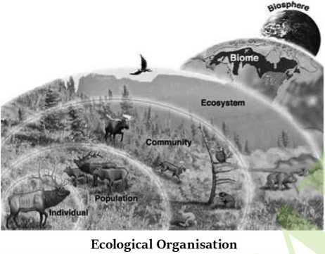
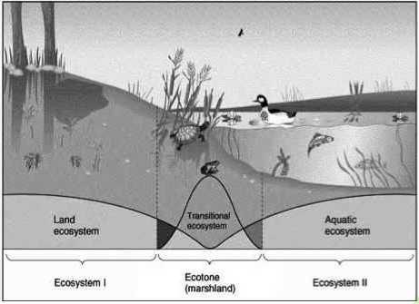
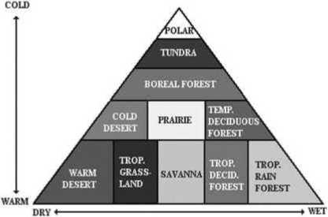
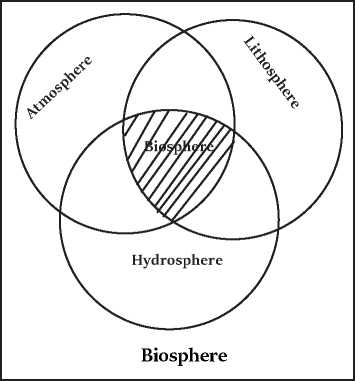

Natural Ecosystem

Fresh Water
Forests
Grasslands
Saline Water
Deserts
Ecology ‘Oikos’ meaning home or place to live in and ‘logos’ meaning study. Literally it is the study of the home of nature.
Ecology is defined “as a scientific study of the relationship of the living organisms with each other and with their environment.”
It deals with the ways in which organisms are moulded by their environment, how they make use of environmental resources including energy flow and mineral cycling.
The roots of ecology lie in Natural History, which is as old as human civilization itself. Since early history, man has indulged in ecology in a practical sort of way, knowingly and unknowingly. In primitive societies every individual was required to have an intimate knowledge of his environment for their survival, i.e., about the forces of nature and of plants and animals around him/her.
Our ancient Indian texts have references to ecological principles. The classical texts of the Vedic period such as the Vedas, the Samhitas, the Brahmanas and the Aranyakas-Upanishads contain many references to ecological concepts. The Indian treatise on medicine, the Charaka-Samhita and the surgical text Sushruta-Samhita, show that people during this period had a good understanding of plant and animal ecology.
These texts contain classification of animals on the basis of habit and habitat, land in terms of nature of soil, climate and vegetation; and description of plants typical to various localities. Charaka- Samhita contains information that air, land, water and seasons were indispensable for life and that polluted air and water were injurious to health.
Everything that surrounds or affects an organism during its life time is collectively known as its environment.
The environment is defined as ‘the sum total of living, non-living components; influences and events, surrounding an organism.
All organisms (from virus to man) are obligatorily dependent on the other organism and environment for food, energy, water, oxygen, shelter and for other needs.
The relationship and interaction between organism and environment are highly complex. It comprises both living (biotic) and non-living (abiotic) components.
The environment is not static. Both biotic and abiotic factors are in a flux and keeps changing continuously.
|
Components of Environment | |
|
Abiotic |
Biotic |
|
Energy Radiation Temperature & heat flow Water Atmospheric gases and wind Fire Gravity Topography Soil Geologic substratum |
Green plants Non-green plants Decomposers Parasites Symbionts Animals Man |
For instance: Let’s take the environment of a fish in the pond.
External environment of fish
• Its environment consists of abiotic components such as light, temperature, including the water in which nutrients, oxygen, other gases and organic matter are dissolved.
• The biotic environment consists of microscopic organisms called plankton which it assume as well as aquatic plants, animals and decomposers.
Internal environment of fish
• It is enclosed by the outer body surface.
• The internal environment is relatively stable as compared to the external environment.
• However, it is not absolutely constant. Injury, illness or excessive stress upsets the internal environment.
• For example, if a marine fish is transferred to a fresh water environment, it will not be able to survive.
The main levels of organisation of ecology are six and are as follows.
Organism is an individual living being that has the ability to act or function independently. It may be plant, animal, bacterium, fungi, etc. It is a body made up of organs, organelles, or other parts that work together to carry out on the various processes of life.
Population is a group of organisms usually of the same species, occupying a defined area during a specific time.
Population growth rate is the percentage variation between the number of individuals in a population at two different times. Therefore the population growth rate can be positive or negative.
The main factors that make population increase are birth and immigration. The main factors that make population decrease are death and emigration.
The main limiting factors for the growth of a population are abiotic and biotic components.
Population density is the relation between the number of individuals of a population and the area they occupy.
If we look around ourself, we will notice that population of plants and animals seldom occur by themselves. The reason for this is quite obvious. In order to survive, individuals of any one species depend on individuals of different species with which they actively interact in several ways.
For eg: Animals require plants for food and trees for shelter. Plants require animals for pollination, seed dispersal, and soil microorganism to facilitate nutrient supply.
Communities in most instances are named after the dominant plant form (species).
For example: A grassland community is dominated by grasses, though it may contain herbs, shrubs, and trees, along with associated animals of different species.
A community is not fixed or rigid; communities may be large or small.
Do you know?
The skies over North India are seasonally filled with a thick soup of aerosol particles all along the southern edge of the Himalayas, Bangladesh and the Bay of Bengal.- NASA research findings.
Types of Community
On the basis of size and degree of relative independence communities may be divided into two types:
(a) Major Community
These are large-sized, well organized and relatively independent. They depend only on the sun’s energy from outside and are independent of the inputs and outputs from adjacent communities.
E.g: tropical ever green forest in the North-East
(b) Minor Communities
These are dependent on neighbouring communities and are often called societies. They are secondary aggregations within a major community and are not therefore completely independent units as far as energy and nutrient dynamics are concerned, e.g: A mat of lichen on a cow dung pad.
Structure of a community
In a community the number of species and size of their population vary greatly. A community may have one or several species.
The environmental factors determine the characteristic of the community as well as the pattern of organisation of the members in the community.
The characteristic pattern of the community is termed as structure which is reflected in the roles played by various population, their range, the type of area they inhabit, the diversity of species in the community and the spectrum of interactions between them.
1.3.4. Ecosystem
An ecosystem is defined as a structural and functional unit of biosphere consisting of community of living beings and the physical environment, both interacting and exchanging materials between them.
It includes plants, trees, animals, fish, birds, micro-organisms, water, soil, and people.
Ecosystems vary greatly in size and elements but each is a functioning unit of nature. Everything that lives in an ecosystem is dependent on the other species and elements that are also part of that ecological community. If one part of an ecosystem is damaged or disappears, it has an impact on everything else.
When an ecosystem is healthy (i.e. sustainable) it means that all the elements live in balance and are capable of reproducing themselves. Ecosystem can be as small as a single tree or as large as entire forest.
Difference between ecology, environment and ecosystem
For example, let us take Shankar IAS Academy and its students. Let’s say that ecology would be the scientific study of student’s relationship with the Shankar IAS Academy as a whole. The Shankar IAS Academy being the environment in which the student studies, and the set of circumstances surrounding the student in which environment would be the teachers, books, other students, etc are said to be ecosystem.
Components of Ecosystem
the components of ecosystem and environment are same.
1. Abiotic Components
Abiotic components are the inorganic and non-living parts of the world. The abiotic part consists of soil, water, air, and light energy etc. It also involves chemicals like oxygen, nitrogen etc. and physical processes including volcanoes, earthquakes, floods, forest fires, climates, and weather conditions.
Abiotic factors are the most important determinants of where and how well an organism exists in its environment. Although these factors interact with each other, one single factor can limit the range of an organism.
a) Energy
Energy from the sun is essential for maintenance of life. In the case of plants, the sun directly supplies the necessary energy. Since animals cannot use solar energy directly they obtain it indirectly by eating plants or animals or both. Energy determines the distribution of organisms in the environment.
b) Rainfall
Water is essential for all living beings. Majority of biochemical reactions take place in an aqueous medium. Water helps to regulate body temperature. Further, water bodies form the habitat for many aquatic plants and animals.
c) Temperature
Temperature is a critical factor of the environment which greatly influences survival of organisms. Organisms can tolerate only a certain range of temperature and humidity.
d) Atmosphere
The earth’s atmosphere is responsible for creating conditions suitable for the existence of a healthy biosphere on this planet.
e) Substratum
Land is covered by soil and a wide variety of microbes, protozoa, fungi and small animals (invertebrates) thrive in it. Roots of plants pierce through the soil to absorb water and nutrients. Organisms can be terrestrial or aquatic. Terrestrial animals live on land. Aquatic plants, animals and microbes live in fresh water as well as in the sea. Some microbes live even in hot water vents under the sea.
f) Materials:
(i) Organic compound such as proteins, carbohydrates, lipids, humic substances are formed from inorganic compound on decomposition.
(ii) Inorganic compound such as carbon dioxide, water, sulphur, nitrates, phosphates, and ions of various metals are essential for organisms to survive.
g) Latitude and altitude
Latitude has a strong influence on an area’s temperature, resulting in change of climates such as polar, tropical, and temperate. These climates determine different natural biomes.
From sea level to highest peaks, wild life is influenced by altitude. As the altitude increases, the air becomes colder and drier, affecting wild life accordingly.
2. Biotic Components
Biotic components include living organisms comprising plants, animals and microbes and are classified according to their functional attributes into producers and consumers.
a) Primary producers - Autotrophs (selfnourishing)
• Primary producers are basically green plants (and certain bacteria and algae).
• They synthesise carbohydrate from simple inorganic raw materials like carbon dioxide and water in the presence of sunlight by the process of photosynthesis for themselves, and supply indirectly to other nonproducers.
• In terrestrial ecosystem, producers are basically herbaceous and woody plants, while in aquatic ecosystem producers are various species of microscopic algae.
b) Consumers - Heterotrophs or phagotrophs (other nourishing)
• Consumers are incapable of producing their own food (photosynthesis).
• They depend on organic food derived from plants, animals or both.
• Consumers can be divided into two broad groups namely micro and macro consumers.
(i) Macro consumers
• They feed on plants or animals or both and are categorised on the basis of their food sources.
• Herbivores are primary consumers which feed mainly on plants e.g. cow, rabbit.
• Secondary consumers feed on primary consumers e.g. wolves.
• Carnivores which feed on secondary consumers are called tertiary consumers e.g. lions which can eat wolves.
• Omnivores are organisms which consume both plants and animals e.g. man, monkey.
(ii) Micro consumers - Saprotrophs (decomposers or osmotrophs)
• They are bacteria and fungi which obtain energy and nutrients by decomposing dead organic substances (detritus) of plant and animal origin.
• The products of decomposition such as inorganic nutrients which are released in the ecosystem are reused by producers and thus recycled.
• Earthworm and certain soil organisms (such as nematodes, and arthropods) are detritus feeders and help in the decomposition of organic matter and are called det-rivores.
Classification of Eco-system:
Natural Ecosystem
Fresh Water
Forests
Grasslands
Saline Water
Deserts
Terrestrial
Aquatic
• Marine Water
The detailed study of ecosystem will be dealt in the subsequent chapters.
Ecosystems are capable of maintaining their state of equilibrium. They can regulate their own species structure and functional processes. This capacity of ecosystem of self regulation is known as homeostasis.
Goods and Services provided by ecosystems include:
• Provision of food, fuel and fibre
• Provision of shelter and building materials
• Purification of air and water
• Detoxification and decomposition of wastes
• Stabilization and moderation of the Earth’s climate
• Moderation of floods, droughts, temperature extremes and the forces of wind.
• Generation and renewal of soil fertility, including nutrient cycling.
• Pollination of plants, including many crops Control of pests and diseases
• Maintenance of genetic resources as key inputs to crop varieties and livestock breeds, medicines, and other products
• Cultural and aesthetic benefits
Ecotone
Ecotone is a zone of junction between two or more diverse ecosystems. For e.g. the mangrove forests represent an ecotone between marine and terrestrial ecosystem. Other examples are - grassland, estuary and river bank
Ecotone
Characteristics of Ecotone
• It may be very narrow or quite wide.
• It has the conditions intermediate to the adjacent ecosystems. Hence it is a zone of tension.
• It is linear as it shows progressive increase in species composition of one in coming community and a simultaneous decrease in species of the other out going adjoining community.
• A well developed ecotones contain some organisms which are entirely different from that of the adjoining communities.
• Sometimes the number of species and the population density of some of the species is much greater in this zone than either community. This is called edge effect.
The organisms which occur primarily or most abundantly in this zone are known as edge species. In the terrestrial ecosystems edge effect is especially applicable to birds.
For example the density of birds is greater in the mixed habitat of the ecotone between the forest and the desert.
Niche
A niche is the unique functional role or place of a species in an ecosystem. It is a description of all the biological, physical and chemical factors that a species needs to survive, stay healthy and reproduce.
A niche is unique for a species, which means no two species have exact identical niches. Niche plays an important role in conservation of organisms.
If we have to conserve species in its native habitat we should have knowledge about the niche requirements of the species and should ensure that all requirements of its niche are fulfilled.
Types of Niche
1. Habitat niche - where it lives
2. Food niche - what is eats or decomposes & what species it competes with
3. Reproductive niche - how and when it reproduces.
4. Physical & chemical niche - temperature, land shape, land slope, humidity & other requirement.
Do you know?
Two Schemes namely Nagar VanaUdyanYojana and School Nursery Yojana have been launched. Nagar VanaUdyanYojana aims to create at least one city forest in each city with a minimum area of 25 ha. The scheme aims at creation of a City Forest in forest areas within their jurisdiction up to a maximum of 100 ha and minimum area of 20 ha. The objective of the Yojana is to create 200 City Forests in the country. The School Nursery Yojana aims to build a lasting bond of students with nature.
1.3.5. Biome
BIOME Distribution based on Temperature and Precipitation
The terrestrial part of the biosphere is divisible into enormous regions called biomes, which are characterized, by climate, vegetation, animal life and general soil type.
No two biomes are alike. The climate determines the boundaries of a biome and abundance of plants and animals found in each one of them. The most important climatic factors are temperature and precipitation.
|
S.No. |
Name of Biome |
Region |
Flora and Fauna |
|
1 |
Tundra |
Northern and Southern most region of world adjoining the ice bound poles |
Devoid of trees except stunted shrubs in the southern part of tundra biome, ground flora includes lichen, mosses and sedges. The typical animals are reindeer, arctic fox, polar bear, snowy owl, lemming, arctic hare, ptarmigan. Reptiles and amphibians are almost absent. |
|
2 |
Taiga |
Northern Europe, Asia and North America. Moderate temperature than tundra. Also known as boreal forest. |
The dominating vegetation is coniferous evergreen mostly spruce, with some pine and firs. The fauna consists of birds, hawks, fur bearing carnivores, little mink, elks, puma, Siberian tiger, wolverine, wolves etc. |
|
3 |
Temperate Deciduous Forest |
Extends over Central and Southern Europe, Eastern North America, Western China, Japan, New Zealand etc. Moderate average temperature and abundant rainfall. |
The flora includes trees like beech, oak, maple and cherry. Most animals are the familiar vertebrates and invertebrates. These are generally the most productive agricultural areas of the earth |
|
4 |
Tropical rain forest |
Tropical areas in the equatorial regions, which is abound with life. Temperature and rainfall high. |
Tropical rainforest covers about 7% of the earth’s surface & 40% of the world’s plant and animal species. Multiple storey of broad-leafed evergreen tree species are in abundance. Most animals and epiphytic plants are concentrated in the canopy or tree top zones. |
|
5 |
Savannah |
Tropical region: Savannah is most extensive in Africa. |
Grasses with scattered trees and fire resisting thorny shrubs. The fauna include a great diversity of grazers and browsers such as antelopes, buffaloes, zebras, elephants and rhinoceros; the carnivores include lion, cheetah, hyena; and mongoose, and many rodents. |
|
6 |
Grassland |
North America, Ukraine, etc. Temperate conditions with low rainfall. |
Grasses dominate the vegetation. The fauna include large herbivores like bison, antelope, cattle, rodents, prairie dog, wolves, and a rich and diverse array of ground nesting bird. |
|
7 |
Desert |
Continental interiors with very low and sporadic rainfall with low humidity. The days are very hot but nights are cold. |
The flora is drought resistance such as cactus, euphorbias, sagebrush. Fauna: Reptiles, Small Mammals and birds. |
Aquatic systems are not called biomes, however they are divided into distinct life zones, with regions of relatively distinct plant and animal life. The major differences between the various aquatic zones are due to salinity, levels of dissolved nutrients, water temperature, depth of sunlight penetration.
|
S.No |
Aquatic ecosystem |
Characteristics |
|
1. |
Fresh Water Ecosystem |
Fresh water ecosystem are classified as lotic (moving water) or lentic (still or stagnant water). Lotic water system includes freshwater streams, springs, rivulets, creeks, brooks, and rivers. Lentic water bodies include pools, ponds, some swamps, bogs and lakes. They vary considerably in physical, chemical and biological characteristics. |
|
2. |
Marine Ecosystem |
Nearly three - quarter of earth’s surface is covered by ocean with an average depth of 3,750 m and with salinity 35 ppt, (parts per thousand), about 90 per cent of which is sodium chloride. |
|
3. |
Estuaries |
Coastal bays, river mouths and tidal marshes form the estuaries. In estuaries, fresh water from rivers meet ocean water and the two are mixed by action of tides. Estuaries are highly productive as compared to the adjacent river or sea. |
|
4. |
Coral reef | |
|
5. |
Mangrove |
Biosphere is a part of the earth where life can exist. Biosphere represents a highly integrated and interacting zone comprising of atmosphere (air), hydrosphere (water) and lithosphere (land).
It is a narrow layer around the surface of the earth. If we visualise the earth to be the size of an apple the biosphere would be as thick as its skin.
Life in the biosphere is abundant between 200 metres (660 feet) below the surface of the ocean and about 6,000 metres (20,000 feet) above sea level.
Biosphere is absent at extremes of the North and South poles, the highest mountains and the deepest oceans, since existing hostile conditions there do not support life. Occasionally spores of fungi and bacteria do occur at great height beyond 8,000 metres, but they are not metabolically active, and hence represent only dormant life.
The energy required for the life within the biosphere comes from the sun. The nutrients necessary for living organisms come from air, water and soil. The same chemicals are recycled over and over again for life to continue.
Living organisms are not uniformly distributed throughout the biosphere. Only a few organisms live in the polar regions, while the tropical rain forests have an exceedingly rich diversity of plants and animals (50% of Global Biodiversity).
Do you know?
Environmental Information System (ENVIS), a Central Sector Scheme of the Ministry has been implemented since 1982. The purpose of the scheme is to integrate country-wide efforts in environmental information collection, collation, storage, retrieval and dissemination through ENVIS websites, which are dedicated to different interesting themes.